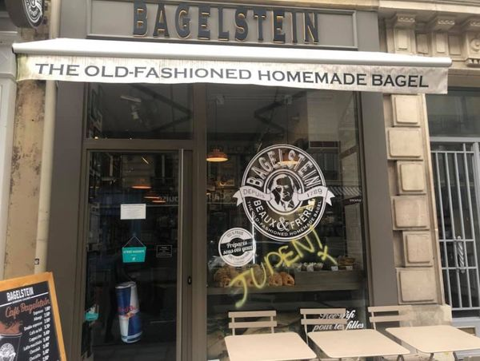

Alain Finkielkraut Alain Finkielkraut et les gilets jaunes Est-il nécessaire de redire à quel point les insultes antisémites dont fut victime Alain Finkielkraut samedi sont révoltantes ? Ces attaques contre cet homme-là en particulier sont annonciatrices de temps mauvais,
Alain Finkielkraut Le tournant ? En revenant de notre manifestation des gilets jaunes dans notre petite ville, manifestation déprimante tant elle ressemblait à l’une de celle de la France Insoumise ou des zadistes, j’
 antisémitisme Mais où est le chat du rabbin ? En tant que chat, j’ai une tendresse particulière pour Joann Sfar auteur du magnifique Le chat du rabbin, film d’une grande intelligence, plein de poésie et